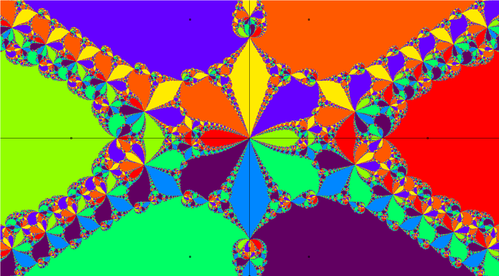

Paul L. Bailey, Ph.D.
Course Material 0504
Quote of the day
"We do not choose survival as a value, it chooses us."
B. F. Skinner, Author of Beyond Freedom and Dignity

AP Calculus AB
AP Calculus AB Lesson 0504
AP Calculus AB Homework 0504
AP Calculus AB Teleconference Signin Sheet
AP Calculus AB Checkin 0504
AP Computer Science
AP Computer Science Lesson 0504
AP Computer Science Homework 0504
AP Computer Science Homework 0430 Scoring Guidelines
AP Computer Science Checkin 0504